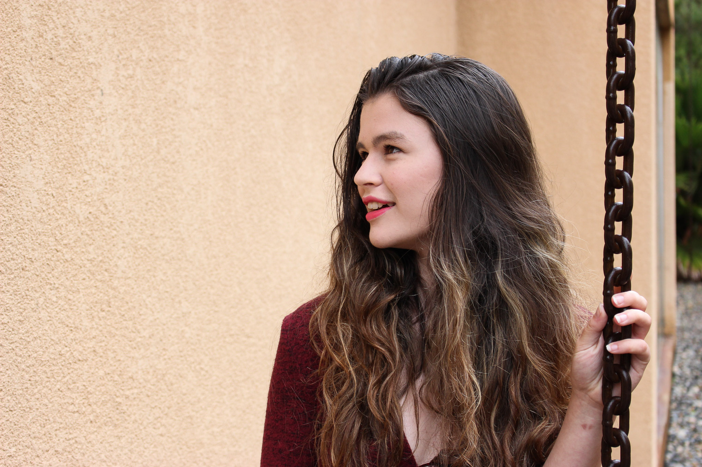
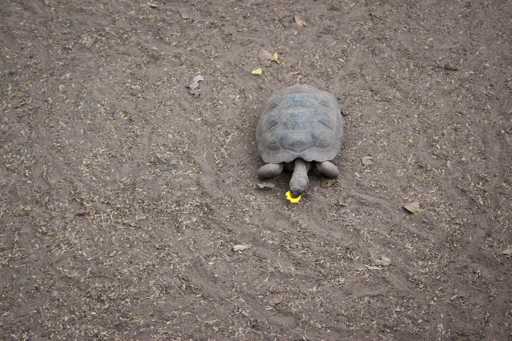
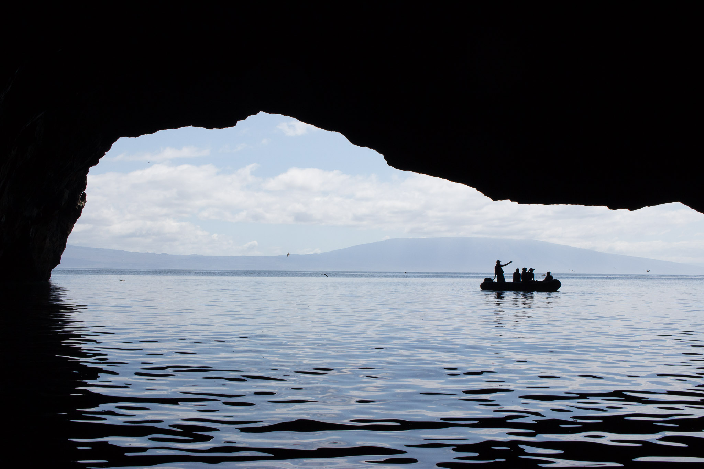
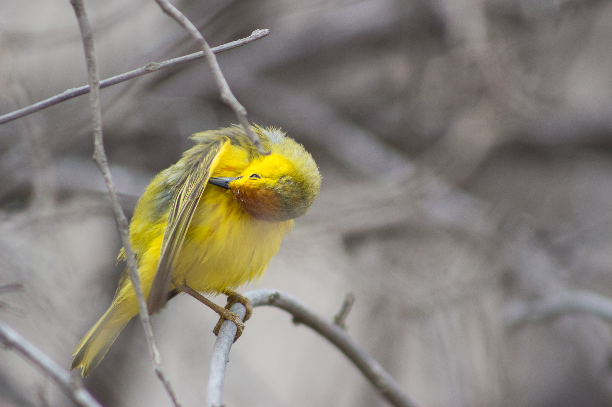
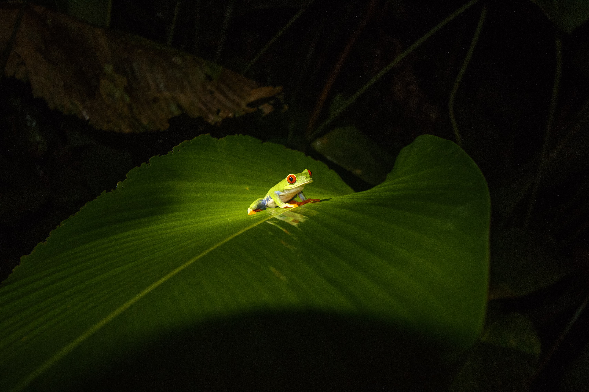
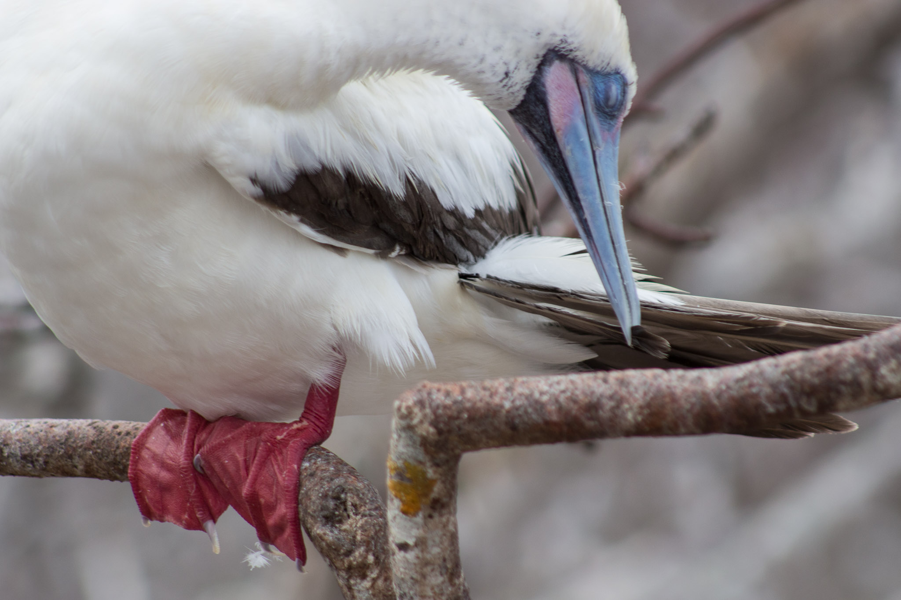
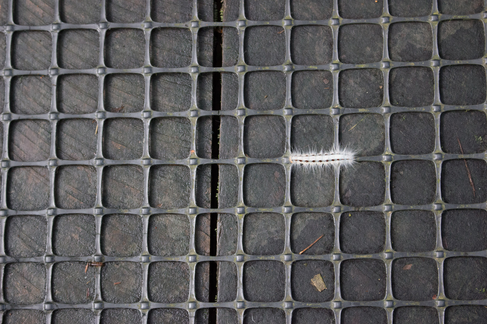

Photography
While I now focus on portrait work, I started learning photography through a conservation photography seminar in Costa Rica taught by Sue McConnell. I believe that an image can change the way a person sees the world or sees themself. Feel free to contact me if you are interested in learning more about my work.







